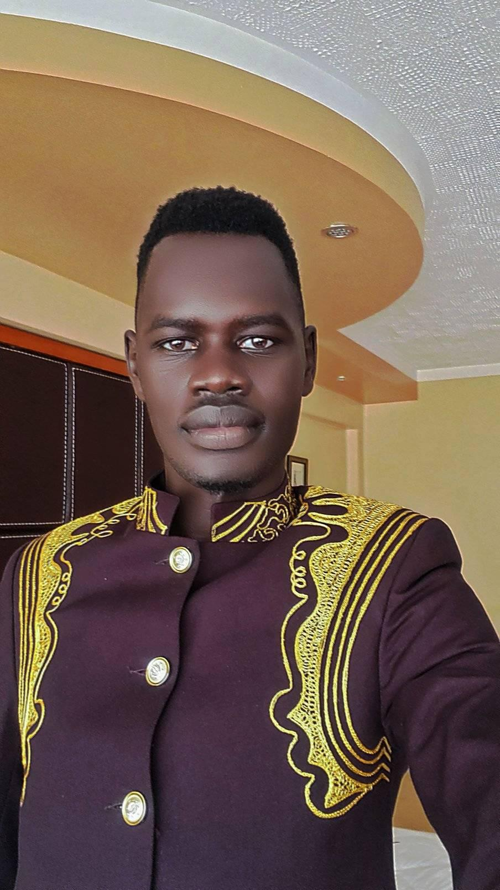

Samuel Mabor Mading
-
About me:
Education
- Bachelor of Science in Computer Science – Victoria University (2024–Present)
- Higher Education Certificate – Victoria University (2023–2024)
- South Sudan Secondary Education Certificate - Bridge Academy Secondary School (2017-2020)
Work Experience
- BPO Executive-Technobrain Uganda (Jan 2022- Jul 2024)
- Call Center Agent-Onfon Media Ltd Uganda (Aug 2024-Present
- Supported software testing and documentation.
- Improved system response by 15%.
Skills
- Welding engineer
- Graphic Designer
- Programming (C++, Java, HTML, CSS)
- Database Management (MySQL)
- Communication & teamwork
Awards / Certifications / Achievements
.
- Google IT Support Certification (2023)
- Best Intern Award – XYZ Company (2024)
Hobbies
Contact details
© 2025 Samuel Mabor Mading. All rights reserved.